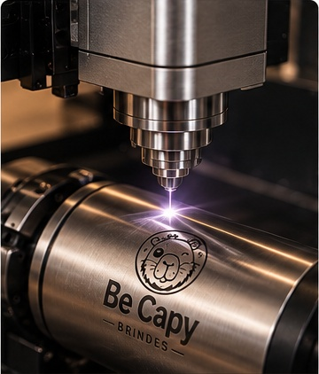
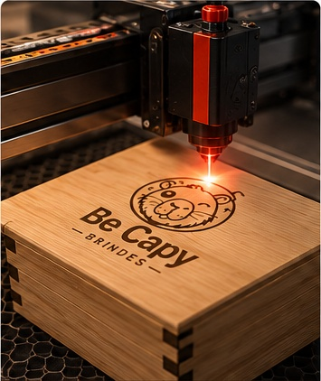
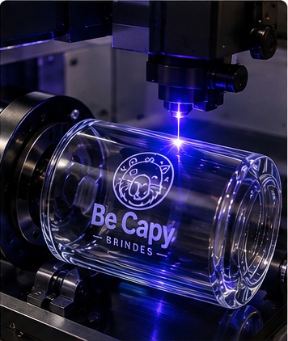
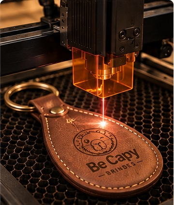

01
Laser de Fibra
Alta precisão e velocidade para metais como aço inox, alumínio e latão, além de materiais compatíveis. É uma tecnologia muito utilizada em aplicações industriais e produtos personalizados.
Transformamos produtos em peças que carregam a identidade da sua marca com precisão, acabamento e personalidade.
Solicite um orçamento →O laser transforma a superfície sem perder a identidade da peça. Cada material responde de uma maneira diferente — e é isso que deixa o resultado único.
Levamos nossas máquinas até o local e fazemos a personalização na hora, diante dos convidados. O que seria apenas um brinde vira parte da experiência.
Estas imagens são de um evento realizado pela Be Capy. Máquina, bancada, produtos e atendimento ficam integrados ao ambiente — e a personalização acontece diante dos convidados.
Ver como funciona em eventos →Escolha o material e imagine sua identidade aplicada.
Conheça nossas tecnologias a laser e descubra o melhor processo para o seu projeto.

Alta precisão e velocidade para metais como aço inox, alumínio e latão, além de materiais compatíveis. É uma tecnologia muito utilizada em aplicações industriais e produtos personalizados.

Excelente para materiais não metálicos e orgânicos, como madeira, MDF, acrílico, couro, papel, vidro e tecidos. Uma escolha versátil para diferentes tipos de brindes.

Trabalha com baixa geração de calor e ação fotoquímica, sendo indicado para materiais mais sensíveis, como determinados plásticos, vidro, silicone e superfícies que exigem acabamento delicado.

Uma tecnologia compacta e versátil para gravação e corte em materiais como madeiras finas, couro, papel e superfícies pintadas ou anodizadas compatíveis.
Uma seleção de aplicações para você visualizar possibilidades reais de personalização.
Para brindes corporativos, kits, eventos, presentes e ações de relacionamento — inclusive com gravação ao vivo no local.
Conte o que você quer personalizar e nossa equipe orienta o melhor caminho.